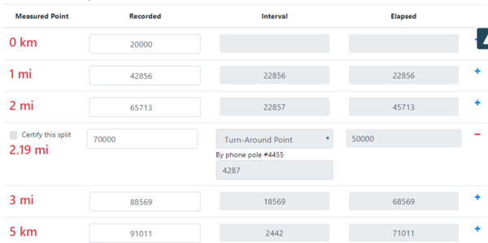
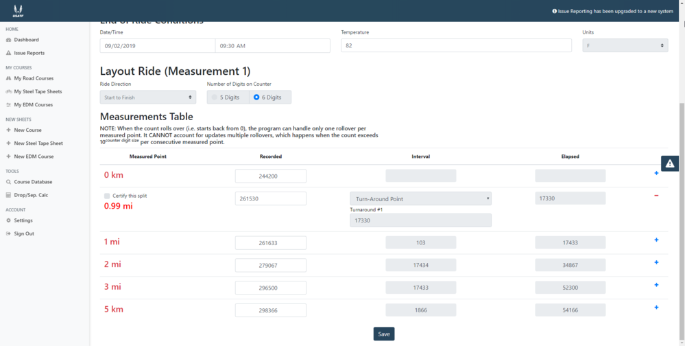
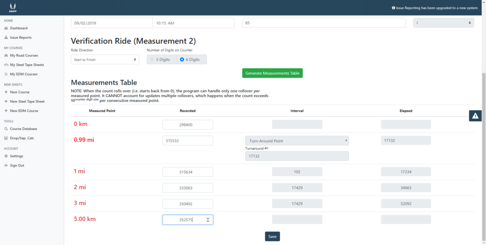

How do you enter measurement data where a turnaround point is not a halfway point?
Split points which are not halfway points
In the layout measurement (Ride 1), after generating the Measurements Table, go to the Measured Point where the TA split will be added and click on the blue plus sign (+) on the right.

Enter the number of counts displayed on your counter at the TA split. Select mi/km for displaying the TA split distance. Click on Turn-Around Point in dropdown box and add a reference note, if desired. Click the SAVE button, which returns you to your Road Courses dashboard.

To check the entry of the split, click on the edit icon (pencil) for Measurement 1
Review the saved Measurements table

Has anyone else had this problem with a turnaround point? I can enter the information for a turnaround point like shown above and I can save it. The first picture shows how I entered the information 

When I try to enter the information for the Verification Ride (Measurement 2) there is an issue. I get a table to input the measurements that includes the turnaround point

I can even enter the information 

But when I try to save the information I get this error message

Without getting the second measurement saved correctly the Measurement Comparison is all messed up

Is it something I am doing wrong or is it a glitch in the system.
This is a known issue and will be corrected. For now, please use Issue Reports in the system to report this. The support team now has the ability to track/review/respond to Issue Reports -- and users have the ability to comment on their reports, too.
To report, click on the triangle-! icon. Track your report in the Issue Reports link on navigation menu
Attachments:
It has already been reported. I just wanted to make sure it wasn't something I was doing wrong.
The issue with entering "custom splits' -- turnaround points and reference points -- has been resolved.